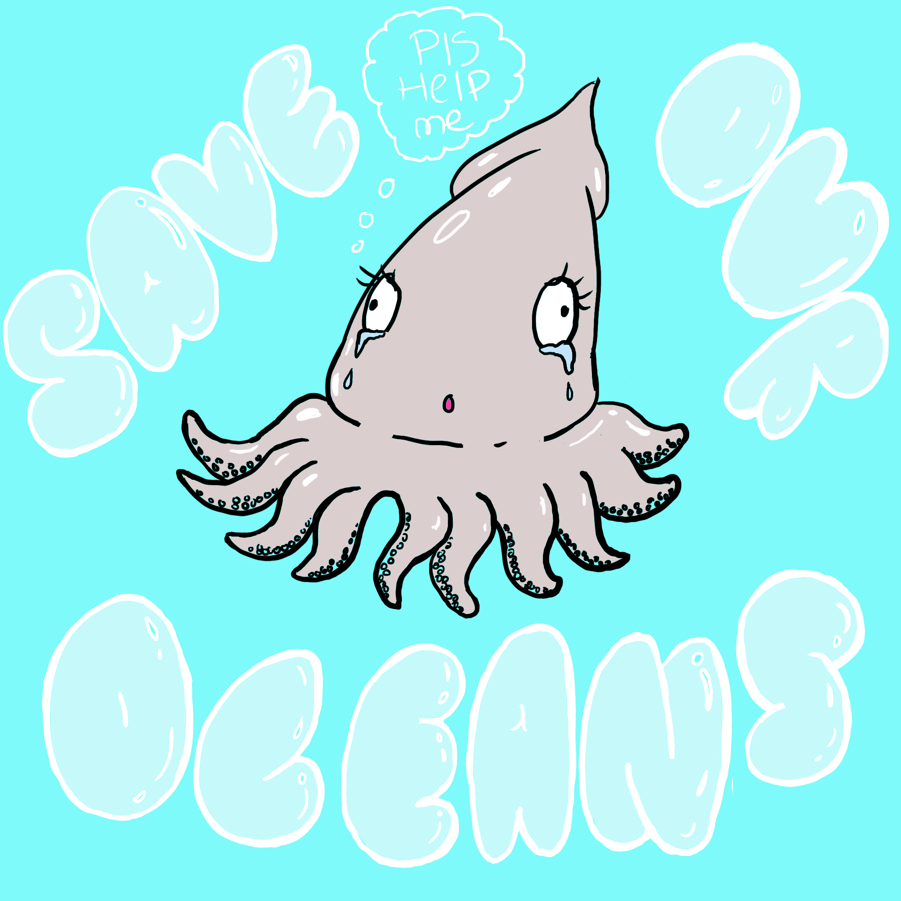
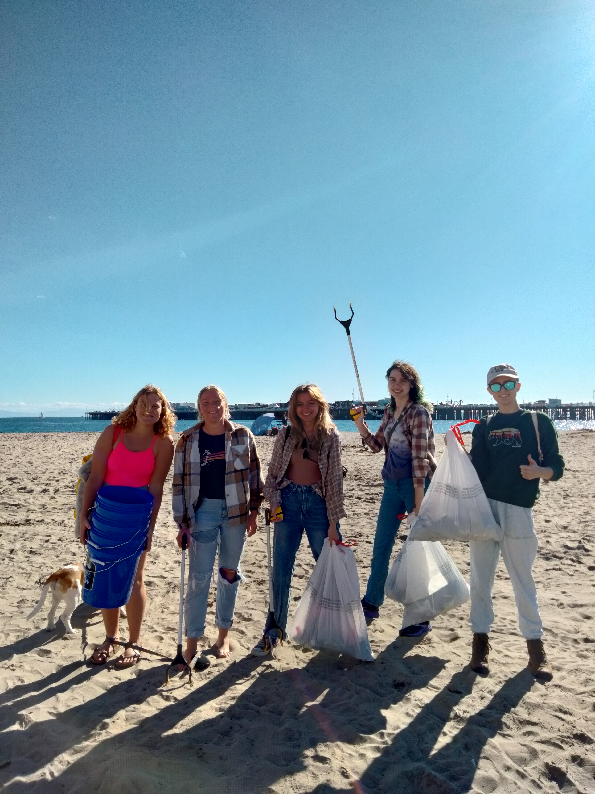
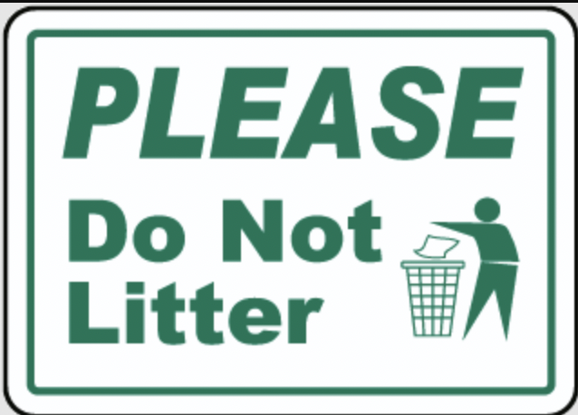

Hey there lil Fishy Friend !
Thanks for swimming in our ocean today!
While we hope this game is fun, we also hope you get to see how annoying it must be as a fish swimming through a sea of trash. The root cause of our abundance of trash is our perpetual commitment to consumerism, cheap manufacturing, and exploiting our natural resources. Yet as humans, we not only create the trash but decide where it ends up. You wouldn’t dump your trash can over your fence into your neighbor's yard, so why do we do that to our fishy friends in the ocean? We are all sharing the same planet and it’s time we take responsibility for the mess we created. Thankfully, there have been some global efforts to curb our use of plastic and clean up the trash in our oceans!
Join us in taking the pledge to quit plastic. By 2050, there will be more plastic than fish in our oceans. Pledge 2050 encourages people to select 4 single-use plastic items to stop using, and then tracks the tonnes of plastic eliminated, and carbon emissions saved.

The Ocean Cleanup is a non-profit organization developing and scaling technologies to rid the oceans of plastic. The Ocean Cleanup is cleaning up floating plastics caught swirling in the Great Pacific Garbage Patch, as well as catching trash from entering the ocean at over 1000 rivers around the world.
Microplastics and larger pieces of trash are mistaken as prey and make their way into the food chain in the ocean. Fish that have inevitably eaten plastic are eaten by humans, which contributes to the increase of microplastics found in our bodies. It’s imperative to your health too, that you get involved.

The NRDC is on the frontlines, waging fierce courtroom battles and hard-hitting campaigns in defense of our climate, health, wildlife, and wild places, and to protect people, vulnerable communities, and the planet. Sustain their fight for the next 50 years with a tax-deductible donation.

4ocean is an ocean cleanup company dedicated to ending the ocean plastic crisis. 4ocean manages one of the world’s largest ongoing ocean cleanup operations and employs hundreds of full-time crews, and is credited with removing 26.5 million pounds of trash to date. They recycle the plastic into raw material to resell, as well as sell a wide selection of bracelets, with each purchase funding another pound of trash to be removed from the ocean.
